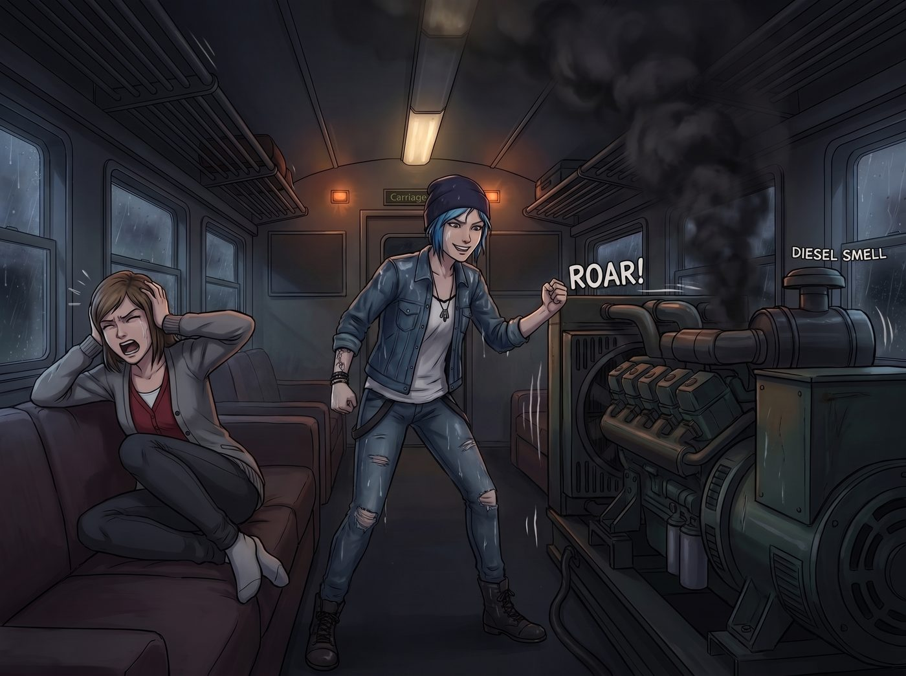
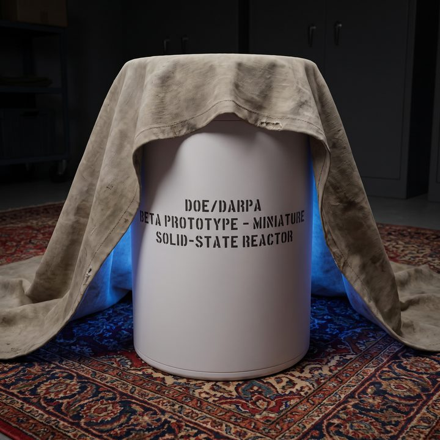

便攜式微型反應爐


三天前，一輛裝甲加厚的聯邦特種押運卡車，曾經艱難地駛進奧林匹亞半島的泥濘林道，把一個發著幽幽藍光的圓柱體設備送到了二號車廂門口。兩名全副武裝的押運員看著這節廢土文青風格的火車廂，一度懷疑自己走錯了地址，直到 Lily 穿著碎花裙、笑瞇瞇地遞上一份文件齊全到令人窒息的聯邦豁免憑證，兩人才半信半疑地卸下貨物，倉皇逃離。
那台小型核微反應爐，就這樣安靜地躺在 Chloe 用廢鐵焊的烤肉架旁邊，直到那場超強暴風雨的到來，才終於迎來了它的輝煌首秀。
一、電網崩潰
當美國那套年久失修的電網，終於在奧林匹亞半島的一場超強暴風雨中徹底罷工時，二號車廂在一秒鐘內陷入了絕對的、令人窒息的黑暗。
在短暫的尖叫與混亂中，只有一個人發出了狂喜的歡呼。
「老娘等這一天等了整整半年了！」黑暗中傳來 Chloe 踢開大門的聲音。不到兩分鐘，伴隨著一陣粗暴的拉弦聲與刺鼻的柴油味，一台體積龐大、聲音震耳欲聾的重型柴油發電機發出了宛如拖拉機般的狂吼。
車廂裡的燈光重新亮了起來，但代價是巨大的——整個車廂都在隨著發電機的低頻共振而瘋狂抖動，空氣中開始瀰漫著濃烈的廢氣味。
「歡迎來到廢土生存模式，女士們！」Chloe 渾身濕透地站在門口，笑得像個末日電影裡的軍閥。
「關掉那個該死的噪音製造機！！」Victoria 捂著耳朵在沙發上崩潰地尖叫，「我寧願在黑暗中凍死，也不要睡在一個偽裝成採石場的垃圾車裡！」
二、無聲的接管
就在 Chloe 準備反唇相譏的瞬間，車廂裡的柴油發電機轟鳴聲突然被一道極其輕微的「滴」聲切斷了。
世界瞬間安靜了下來。
但不可思議的是，車廂裡的燈光不僅沒有熄滅，反而變得前所未有的明亮且穩定。原本因為電壓不穩而停擺的頂級冷暖空調，發出了極其絲滑的運作聲，甚至連 Victoria 房間裡的恆溫紅酒櫃都重新亮起了優雅的藍光。
Chloe 愣住了。她猛地轉頭看向窗外，她的柴油發電機還在棚子裡瘋狂噴著黑煙，但車廂的供電系統顯然已經物理上與它徹底斷開了。
「Chloe 學姐的內燃機充滿了工業時代的浪漫，但在這種密閉環境下，一氧化碳中毒的風險嚴重違反了環境保護署的居住安全標準。」
Lily 穿著她那件印著小熊圖案的羽絨睡袋，手裡端著一杯熱牛奶，從走廊深處走了出來，揭開了一塊平時用來蓋雜物的防塵布。
防塵布下，是一個大約只有迷你冰箱大小、通體雪白、表面沒有任何接縫、正散發著幽幽藍色光暈的圓柱體金屬設備。它沒有任何噪音，只有靠近時才能聽到一種極其科幻的、低頻的磁懸浮嗡嗡聲。
「Lily……這是什麼鬼東西？」Chloe 手裡的扳手滑落到了地上。
三、荒謬的日常應用
「這是能源部與國防高等研究計劃署聯合測試的便攜式微型固態核反應爐 Beta 原型機。」Lily 喝了一口牛奶，語氣平靜得像是在介紹一台新的微波爐，「無輻射外洩風險，半衰期供電可達二十年。」
車廂裡陷入了死一般的寂靜。
「妳……妳弄來了一顆核彈？！」Victoria 嚇得直接跳到了沙發靠背上，「妳把一個核反應爐放在我的地毯旁邊？！」
「Victoria 學姐，請不要使用帶有恐慌色彩的非專業詞彙。它不具備武器化條件，且外部覆蓋了軍規級別的防輻射鉛層。」Lily 溫柔地糾正她。
Max 默默地舉起相機，對著那個正在為整個車廂提供完美核能供電的小圓柱體按下了快門。「所以……我們現在正在用核能煮咖啡？」
「不僅是煮咖啡，Max。」Kate 戴著隔熱手套，端著一盤剛烤好的巧克力軟餅乾從廚房走出來，蹲在那個核反應爐旁邊，伸出手感受了一下設備表面散發出的微弱熱量。「Lily，這個反應爐的廢熱分布得非常均勻呢。妳覺得，如果我在上面鋪一層錫箔紙，是不是可以用來溫熱明天的法式長棍麵包？」
「理論上完全可行，Kate 學姐。它的表面恆溫在攝氏 45 度左右，非常適合麵團的二次發酵。」Lily 認真地在筆記本上記錄下這項「核能的民用烘焙擴展應用」。
Chloe 站在門口，聽著外面還在徒勞地發出巨大噪音的柴油發電機，看著車廂裡正在用核反應爐發酵麵包的小天使，徹底陷入了存在主義危機。在這個由實習生用官僚魔法統治的絕對領域裡，就連末日廢土的生存法則，也只能被迫向極致的行政合規低頭。